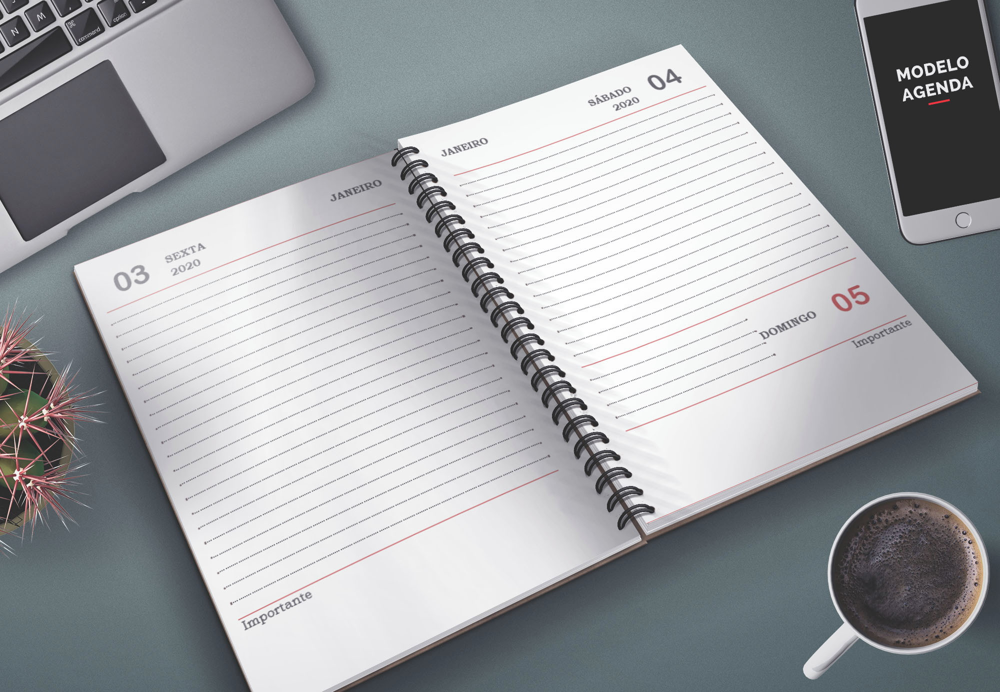
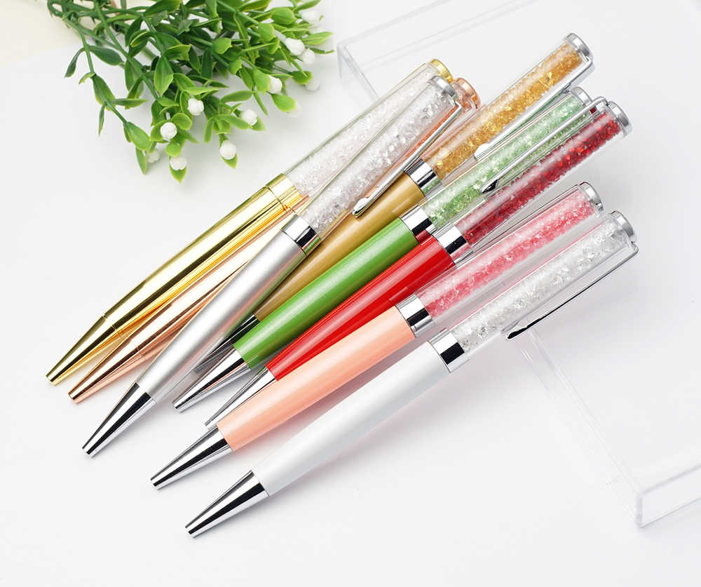
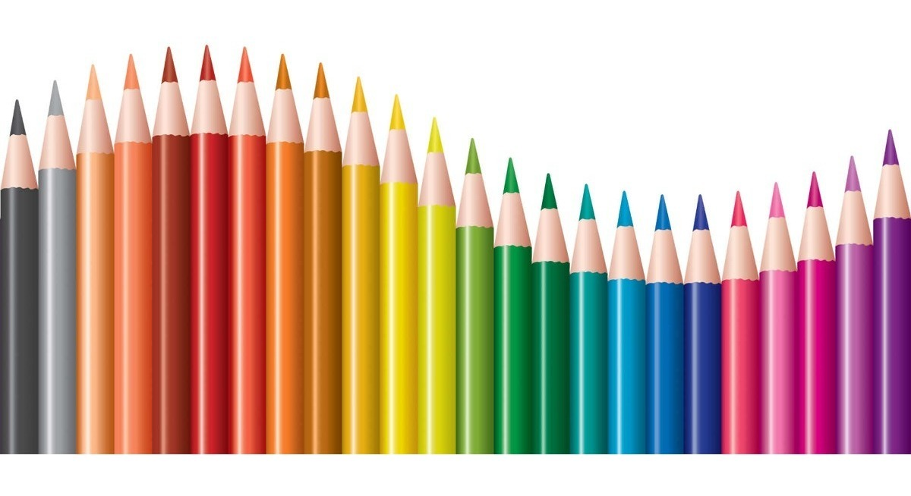
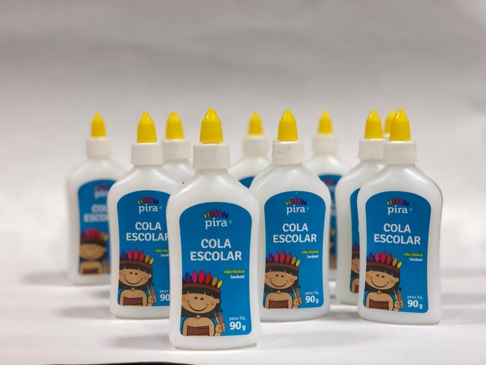
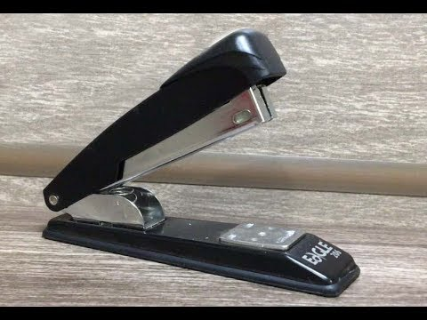
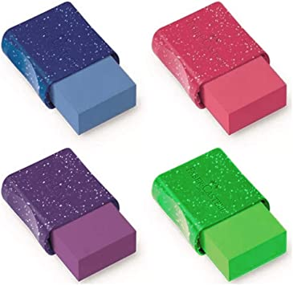

...................................................................................................................................................................
IF Sul de Minas - Campus Machado
Inteligencia Artificial - Prof. Matheus Franco
Priscila Almeida Ferreira
7° Período Licenciatura em Computação'

"As agendas são utilizadas para anotações de tarefas e horários importantes.
Geralmente é de uso pessoal e tem prazo de validade de 1(um) ano, relata-se qu as agendas tem
origens desde a antiguidade onde seu modelo era em formato de pergaminho, na época do Imperio
Romano. E hoje podemos encontrar diversos modelos de agendas modernas e personalizadas!"

"A escrita foi uma das mais importantes descobertas do homem. eram utilizados pedaços pontiagudos de madeira ou ossos para traçar os escritos, marcando permanentemente o bloco de argila onde eram feitos.
Durante muitos anos, as penas de ganso foram utilizadas para a escrita. Somente no final do século XVIII é que surgiu a ideia de substituir tal instrumento por um objeto manufaturado.
Assim, foram criadas as penas de metal, as quais obtiveram relativo sucesso na época, embora as penas de ave continuassem a ser usadas.As canetas esferográficas, principal modelo usado atualmente, surgiram em 1937 por meio do húngaro Lásló Bíró,o qual se baseou em uma caneta que não borrava e cuja tinta não secava no depósito, como fazia a velha caneta-tinteiro.."

"O lápis é uma ferramenta para escrever, desenhar ou até riscar papel, habitualmente constituído por um estilete cilíndrico de grafite revestido de madeira - o tradicional lápis de escrever preto.
O lápis moderno apareceu no século XVI, depois da descoberta das primeiras jazidas de grafite na Inglaterra. No entanto, até hoje em inglês o lápis grafite é chamado de "lead pencil"
que quer dizer lápis de chumbo, provavelmente por causa da influência da cultura greco-latina."

"A cola foi descoberta na Pré-História Para desenvolver uma espécie de tinta usada na Arte Rupestre (pinturas em cavernas),
os homens da Antiguidade resolveram misturar sangue, ovos e sumos de frutas. No entanto, os mesmos perceberam que a mistura tinha uma propriedade de grude muito boa. Foi assim que surgiu a primeira
substância colante da história. Atualmente as colas são feitas a partir substâncias sintéticas, algo bem mais agradável do que antigamente."

"Os primeiros registros desse elemento de fixação surgem dos antigos persas, que precisavam de
soluções para manterem unidos, de forma segura, blocos de pedra que eram usados em construçõe. um construtor teve a ideia de criar um pedaço de metal torto, como dois pregos industriais unidos em uma mesma cabeça.
Esse objeto era usado para ser fincado em dois blocos. primeiro grampeador da história era destinado para união de papéis.
A ferramenta foi feita à mão para uso exclusivo de Luís XV, no século XVIII."

"A borracha natural é o produto primário da coagulação do látex da seringueira (Hevea brasiliensis).
Hoje, a borracha sintética, cotômero natural em algumas aplicações e complementar em outras, é produzida a partir de derivados de petróleo.
Tanto uma como outra tem como polímero fundamental o poli-isopreno. "
Clique no botão para reconhecer um de nossos materiais!